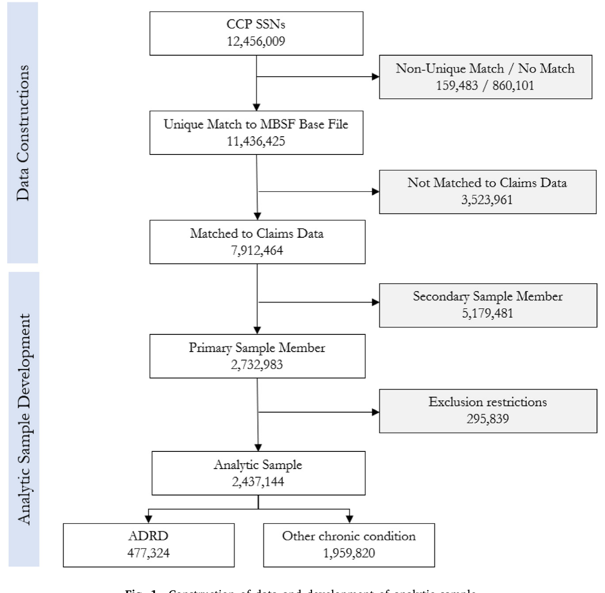
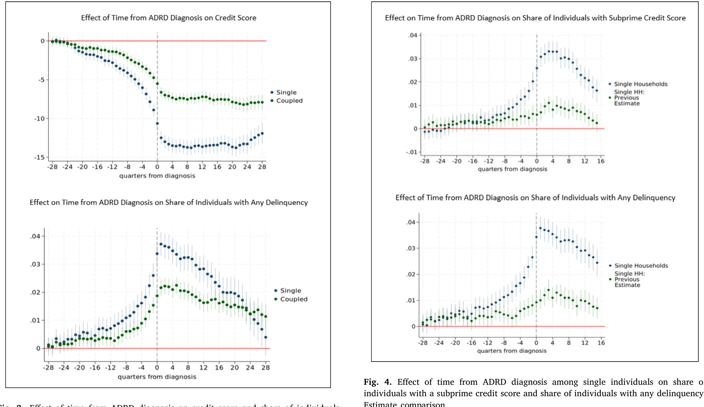
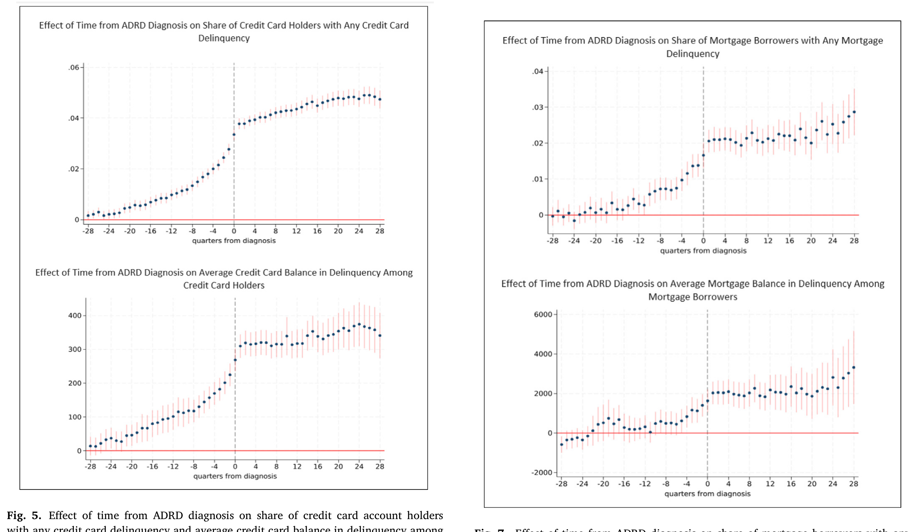
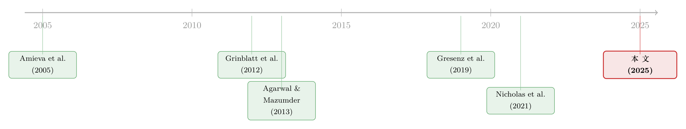

在确诊之前，信用分已经先开口了
本文读的是 Gresenz, Mitchell, Rodriguez, Wang, Turner & van der Klaauw (2025, Journal of Financial Economics)：用按个人身份精确匹配的全美征信数据与 Medicare 数据，作者发现阿尔茨海默病及相关痴呆 (Alzheimer's disease and related dementias, ADRD) 在正式确诊之前的好几年，就已经在一个人的信用记录上留下了可观测的痕迹——信用分下滑、信用卡逾期、抵押贷款拖欠。确诊前一年，逾期概率比基准高出 19.5%（即 1.5 个百分点），信用分平均低 5.3 到 7.3 分。换句话说，一份征信报告，可能比医生更早「察觉」到一个人的记忆正在出问题。
1 一个让人不安的设问
先来想象一个场景。一位 72 岁的老人，独自住在一座房子里，每个月按时还房贷、按时付信用卡账单，几十年如一日。某一天，他忘了一笔账单的截止日期；又一个月，他在一张卡上刷到了接近额度的上限；再过些日子，他的信用分悄悄掉了几分。这些变化都很小，小到家人不会注意，小到他自己也不会在意——直到两年、三年之后，医生才第一次在病历上写下「阿尔茨海默病」。
现在的问题是：那些小到没人注意的财务异常，是从什么时候开始的？是确诊那一刻，还是更早？
这正是本文的出发点，也是它真正让人脊背发凉的地方。我们通常以为，疾病是先被「诊断」、然后才「产生后果」的。但记忆类疾病不是这样。ADRD 是渐进的（progressive），从大脑里悄悄发生改变的「临床前期」(preclinical stage)，到症状轻微的「早期」(early stage)，再到中期、晚期，是一条缓慢下滑的曲线。神经科学的证据早就指出，认知功能的衰退可以追溯到确诊前很多年——Amieva 等 (2005) 记录到痴呆确诊前 9 年的认知下滑，Mistridis 等 (2015) 甚至追到了 10 年以上。
可这里有一个尖锐的矛盾：既然早期症状如此轻微、难以被旁人察觉，那它到底有没有真实的、能用钱衡量的后果？还是说，在确诊之前的那段「灰色地带」，一切都还风平浪静？
本文的回答是：风平浪静只是表象。在确诊之前那段没人察觉的岁月里，金融行为早已开始失序——而这恰恰是个体最脆弱、却最缺乏保护的时刻。
2 为什么这件事值得一篇 JFE
你也许会问：这不就是一个「老年人记性差了、账记不清了」的常识吗？需要顶刊来论证吗？
需要。因为对于有老年人的家庭，财务决策的分量是随年龄上升的。退休之后，收入流逐渐枯竭，人越来越依赖一笔基本固定的存量资产；与此同时，健康相关的开支却在攀升（Jacobson et al., 2021）。在这样的处境里，任何一个财务失误的代价都被放大。而 ADRD 影响的，恰恰是做财务决策最核心的那几项认知能力——情景记忆 (episodic memory)、语义记忆 (semantic memory)、执行功能 (executive function)。文献里早有线索：认知能力关系到财富与财富结构 (McArdle et al., 2011)、交易行为与业绩 (Grinblatt et al., 2012)；而在负债端，认知功能被联系到信用卡的最优使用 (Agarwal and Mazumder, 2013)、抵押贷款违约的概率 (Gerardi et al., 2013)、以及还款行为 (Brown et al., 2016)。
更要命的是，ADRD 不只损伤「算账」的能力。它还伴随人格改变与神经精神症状——责任心 (conscientiousness) 下降、神经质上升、外向性减弱 (Robins Wahlin and Byrne, 2011)。而 Parise and Peijnenburg (2019) 发现，责任心和情绪稳定性更低的人，更容易陷入财务困境。于是早期 ADRD 患者面临双重风险：一方面自己更容易做出糟糕的财务决策 (Han et al., 2015b)，另一方面更容易被他人盯上、遭受金融剥削 (Han et al., 2015a; Wood and Lichtenberg, 2017)。
ADRD 影响了超过 11% 的 65 岁以上美国人，而且这个数字到 2050 年预计要翻倍 (Alzheimer's Association, 2023)。所以这不是一个边角料问题，而是一个关乎几千万家庭的财务安全问题。
3 真正关键的一步：把征信和病历「对齐」到同一个人
讲到这里，一个自然的难题浮现出来：你怎么可能同时知道一个人的财务行为、和他几年后才会被诊断出的疾病？这两类信息分属两个完全不相干的系统——一个在征信机构，一个在医保。
本文最硬核的贡献，正是把这两个系统在个人层面缝在了一起。
数据的一头，是纽约联储的消费者信用面板 (Consumer Credit Panel, CCP)，源自 Equifax，覆盖约 89% 的美国成年人 (Lee and van der Klaauw, 2010)，2000–2017 共 72 个季度。它极其细颗粒：信用分、每一笔贷款的发放、余额、额度、还款状态/逾期，按抵押贷款、循环账户（信用卡）、车贷等分门别类，逐季更新。
数据的另一头，是 Medicare 的受益人主文件 (Master Beneficiary Summary File, MBSF)，同样覆盖 2000–2017。其中的「慢性病仓库」(Chronic Conditions Warehouse) 用 CMS 的算法给每个慢性病打上首次发生日期的标记，包括阿尔茨海默病和 ADRD。这套基于理赔的识别并非完美，但 Taylor 等 (2009) 报告其识别 ADRD 的敏感度与特异度分别为 0.85 和 0.89，Grodstein 等 (2022) 报告 0.79 和 0.88——足够可靠。
而把两头对齐的钥匙，是社会安全号 (Social Security Number, SSN)，一个唯一标识符。这一步看似只是技术细节，却是本文区别于前人的命门。此前最接近的研究 Nicholas 等 (2021) 是用一组家庭特征做确定性匹配的；而在非唯一标识符上做匹配，会引入测量误差和估计偏误，且无法量化匹配的不确定性 (Enamorado et al., 2019)——数据集越大，这个问题越严重。本文用 SSN 匹配，匹配率高达 91.8%。
匹配的代价是规模上的奢侈：最终的分析样本包含近 50 万曾被诊断为 ADRD 的个体、约 200 万从未被诊断的个体，合计超过 1.37 亿条季度观测。如此庞大的样本，正是为了在确诊前许多年那些极其微弱的效应面前，仍然有足够的统计功效；也正是为了支撑按家庭结构、种族、教育水平的分组分析。

Figure 1: Construction of data and development of analytic sample
4 识别策略：让每个人和「过去的自己」比
有了数据，接着是识别。作者用的是带个体与时间固定效应的事件研究 (event study) 模型，事件日期因人而异，并纳入「从未被处理」(never-treated) 的个体作为对照 (Miller, 2023)。
它的逻辑可以这样写出来：
这里的 \(E_i\) 是个体 \(i\) 被诊断为 ADRD 的那个季度，\(k = t - E_i\) 度量「距诊断还有/已过多少个季度」。识别早期效应所依赖的，是诊断时点在人群中的差异、以及个体自身随时间的变化。
为什么个体固定效应 \(\alpha_i\) 至关重要？因为一个人会不会得 ADRD、本身的信用习惯如何，这些都和「发病概率」与「财务结果」同时相关。把 \(\alpha_i\) 放进去，相当于让每个人和过去的自己比，从而把这些不随时间变的、观测不到的混杂因素一笔吸收掉。
但固定效应还不够。曾被诊断和从未被诊断的两群人，本就可能系统性地不同。于是作者再加一道保险：用倾向得分加权 (propensity score weighting, Abadie, 2005; Hirano et al., 2003) 在可观测维度上把两组拉齐。
到这一步，逻辑链条已经相当扎实。可一个挑剔的读者仍会追问：你怎么知道这些 \(\beta_k\) 捕捉到的是 ADRD 的症状，而不是「快被诊断出某种病的人」共有的某种东西？
作者给出的回答里，最漂亮的是一招安慰剂检验 (placebo test, Eggers et al., 2024)：把「距 ADRD 诊断的时间」这组自变量，替换成「距其他疾病诊断的时间」。如果换成别的病，那种确诊前的财务恶化就消失了——那就说明，原来的效应确实是 ADRD 这种认知疾病特有的，而非「任何一种病临近确诊」都会有的通病。此外，他们还做了一个「症状出现之前的『前期』(pre period)」差异检验，并在不加权、以及干脆扔掉对照组的设定下重做——结果都稳健。
5 结果：在确诊之前，信用分已经先开口了
现在揭晓那个最初的设问。
第一，信用分与逾期，是连续而渐进地恶化的。 作者发现，早期 ADRD 在确诊前 6.5 年的每一个季度都在压低信用分，在确诊前 7 年的每一个季度都在抬高逾期概率。越靠近确诊，效应越大——这与疾病渐进的临床特征严丝合缝。具体到量级：确诊前一年，逾期概率比基准高出 19.5%，也就是 1.5 个百分点；而紧邻确诊的那一年，信用分平均低了 5.3 到 7.3 分。

Figure 3: Effect of time from ADRD diagnosis on credit score and share of individuals
如图 3 所示，无论是信用分还是逾期份额，时间轴从左（确诊前多年）走到 0（确诊），那条曲线都在持续、单调地往坏处走。这不是某个季度的偶然抖动，而是一条清晰的下滑趋势。
第二，影响的「面」很宽，而且不同账户的时间表不一样。 ADRD 既影响还款额度固定、按期偿付的分期账户（如抵押贷款），也影响还款金额随消费波动的循环账户（如信用卡）。对后者，效应来得更早，波及逾期概率、逾期余额、信用利用率 (credit utilization rate)、以及信用卡被「刷爆」(maxed-out) 的概率。这些渠道指向了背后的机制：忘记还款、无力应对自动扣款系统的中断、账户管理失序、以及消费行为本身的改变。
而抵押贷款的效应，则要到确诊前约 3 年才出现——出现得晚，但含义更重。因为除了「忘记还款」，它还可能意味着患者已经财务上过度扩张、无力履行既定的偿付义务。

Figure 7: Effect of time from ADRD diagnosis on share of mortgage borrowers with any
第三，也是最具人文重量的一点：影响是普遍的，但分布并不均匀。 单身和有伴侣的家庭、少数族裔与非少数族裔、高教育与低教育地区，无一幸免。有伴侣的家庭享有部分但不完全的保护——这大概反映了家庭共同决策的好处 (Fonseca et al., 2012)。而早期效应在单身者和黑人群体中更大。后者的差异，部分源于本就更脆弱的财务处境，部分则源于黑人和西语裔群体确诊被系统性延迟 (Lin et al., 2021; Chen et al., 2024)——确诊越晚，意味着在「距诊断的同一时点」上，他们实际经历的症状更重。
6 这篇论文站在哪里：文献脉络
把视野拉远，这条研究脉络是怎么一步步走到这里的？
最早的一层，是认知能力与财务决策的联系。McArdle 等 (2011)、Grinblatt 等 (2012) 在资产端建立了认知与财富、交易业绩的关系；而 Agarwal and Mazumder (2013)、Gerardi 等 (2013) 把目光转向负债端，发现认知与信用卡使用、抵押违约相关。这一层告诉我们：认知，是财务行为的一个底层变量。
接着，一个自然的问题是：如果不是泛泛的「认知能力」，而是 ADRD 这种会确诊、会留下时间戳的具体疾病呢？这把认知问题从横截面的相关，推进到了可以谈「疾病进程」的动态。Gresenz 等 (2019) 是直接的前身——他们用「距诊断的时间」作为症状的综合度量，结合 HRS 调查与 Medicare 数据，发现早期 ADRD 让家庭的流动资产面临巨大风险。但 HRS 的财务数据是自报的、每两年才测一次、且不够细。
然后，Nicholas 等 (2021) 用合并的征信与 Medicare 数据，研究了独居老人的逾期概率和次级信用分。这已经很接近本文了。但它有几处硬伤：样本只有 81,364 人，只覆盖独居者（而 60 岁以上独居的只占 27%），用家庭特征做匹配，且只看两个结果。

而本文，正是把这条线推到当前的尽头：用 SSN 精确匹配、覆盖所有家庭类型、240 万人的样本、一整套信用结果。对 Nicholas 等 (2021) 研究过的同样两个结果、同样的单身样本，本文估出的确诊前效应要大 2 到 3 倍，确诊时的效应大 4 倍以上。数据质量的提升，直接改写了我们对这个问题严重程度的认知。
顺带一提，这条脉络里还有一支关注「保护」而非「测量」的研究——比如 Carlin 等 (2023) 讨论如何「动员金融机构去对抗老年人金融虐待」，DeLiema 等 (2020) 记录针对老年人的金融欺诈。本文的发现，恰好为这一支提供了弹药：既然信用数据能这么早「看见」风险，那它本身就可能成为早期预警的工具。
（关于一次外部冲击如何最终落到普通家庭的信用分上，可参见《煤矿衰落里的「金丝雀」》；而关于用非传统的财务行为数据去「看见」原本看不见的人，可参见《一辆共享单车，如何让1亿人「被看见」？》。）
7 评论与延伸（Q&A + 研究方向）
(a) 几个可能的疑问
Q：固定效应 + 倾向得分加权，真的等于因果吗？会不会只是「快生病的人」共有的某种趋势？
这正是作者最警惕的威胁，他们的回应也最有针对性。安慰剂检验把「距 ADRD 诊断的时间」换成「距其他疾病诊断的时间」，确诊前的财务恶化随之消失——这说明效应是 ADRD 这种认知疾病特有的，而不是「临近任何确诊」的通病。再加上「前期」差异检验、不加权、扔掉对照组三套稳健性检验，因果解读是站得住的。但严格说，它仍是「准实验」而非随机实验，残余的、与认知衰退同步发生的未观测冲击无法被完全排除。
Q：用理赔数据识别 ADRD，会不会把病人认错？
会有误差，但方向是可控的。文献报告的敏感度约
0.79–0.85、特异度约0.88–0.89，意味着既有漏诊也有误诊。这类误分类通常会让估计衰减（偏向于零），所以真实效应可能比报告的还要大一些。换句话说，测量误差让结论更保守，而非更夸张。
Q：信用分下降会不会其实是「生病花钱多」导致的，而不是「认知失序」导致的？
两者很难完全切开，但结果的形态给了线索。如果纯粹是医疗开支冲击，我们预期它在确诊（开始大量就医）前后陡然出现；而本文看到的是确诊前
6.5–7年就开始、且渐进累积的恶化，与认知曲线的形状吻合，与「开支冲击」的形状不符。信用卡（对日常管理敏感）效应早于抵押贷款，也更像是「管理能力」而非「现金流」的故事。
Q：为什么有伴侣只是「部分保护」，而不是完全保护？
因为共同决策确实能挡掉一部分失误（Fonseca et al., 2012），但伴侣往往也是老年人，自己也可能在认知或精力上力不从心；而且早期症状轻微到连同住的人都难以察觉。保护是真实的，但不是铁壁。
Q：单身者和黑人群体效应更大，是「更脆弱」还是「确诊更晚」？
两者都有。单身者缺少家庭的财务缓冲，这是脆弱性。而黑人群体的更大效应，部分来自确诊被系统性延迟——在「距诊断的同一时点」上，他们实际已经病得更重。这提醒我们：基于「距诊断时间」的事件研究，其系数本身就嵌入了诊断及时性的不平等。
Q：这对金融机构和监管意味着什么？
最直接的含义是：信用行为数据可能是 ADRD 的一种早期预警信号。Agarwal and Muckley (2024) 已指出「理财困难」能帮助识别早期痴呆。本文把这个想法量化了——既然确诊前
6–7年信用记录就在变化，那么金融机构理论上可以更早介入、设置保护机制，去防范这段「确诊前真空期」里的自我误判与外部剥削。
(b) 几个可能的研究问题与提案
1. 确诊前的「财务真空期」是否波及了信用市场之外的资产端？
【经济故事】本文聚焦征信（负债与还款）。但 Gresenz 等 (2019) 提示流动资产也会受冲击。一个自然的延伸：把同样的 SSN 精确匹配思路用到经纪账户/退休账户数据上，看早期 ADRD 是否导致异常的资产抛售、配置漂移或交易频率突变。
【可行性】中。难点在于个人层面的资产数据极难与 Medicare 匹配；可行的替代是用券商或 401(k) 管理人的匿名面板配合年龄与认知代理变量。识别仍可沿用事件研究，但「事件日期」的获取是瓶颈。
2. 公司债/信用市场里，有没有「机构层面的认知衰退」类比？
【经济故事】把视角从家庭搬到机构：关键决策者（基金经理、信贷审批人）的认知老化，是否会在其管理的信用组合上留下可观测的、渐进的痕迹？比如违约识别变慢、定价反应迟钝。
【可行性】低到中。决策者的「认知状态」几乎无法直接观测，只能用年龄、任职年限等粗代理；且很难找到「确诊」式的清晰事件。更现实的是研究经理离任/接班作为冲击。诚实地说，直接照搬本文的设计在这里不 doable。
3. 自动扣款 (autopay) 是保护伞还是陷阱？
【经济故事】本文提到，效应渠道之一是「无力应对自动扣款系统的中断」。那么开通了 autopay 的人，在早期 ADRD 阶段是否被保护得更好——还是反而因为「看不见账单」而更晚发现异常、积累更多隐性风险？
【可行性】中到高。CCP 不直接标记 autopay，但账户层面的还款规律性可以构造代理变量。可在本文样本内做异质性分析：按「还款规律性」分组看确诊前效应的差异。数据与识别都现成，关键是代理变量的构造质量。
4. 早期预警模型的外部效度：信用信号能否真的提前识别 ADRD？
【经济故事】本文证明了「相关性的方向与时序」，但没回答一个运营问题：仅凭信用行为的变化，能多准地前瞻性地标记出高风险个体？这关系到能否落地为筛查工具。
【可行性】高。本文的匹配数据本身就支持训练一个预测模型（特征 = 信用行为轨迹，标签 = 未来是否确诊 ADRD），报告其灵敏度/特异度与提前量。需谨慎处理的是假阳性的伦理代价与算法公平性（尤其考虑到确诊延迟在种族间的不均）。
8 我的判断
这篇论文最大的贡献，不在于「发现了认知衰退影响财务」这个方向——那已有丰厚文献——而在于它用一次数据工程上的胜利，把这个老问题钉死在了一个此前无法企及的精度上。SSN 精确匹配带来的 91.8% 匹配率和 1.37 亿观测，让作者得以在确诊前 6–7 年那种极其微弱的信号面前依然有话可说，并把前人因小样本、粗匹配而低估的效应放大了 2–4 倍。这是「更好的数据改写结论」的一个教科书案例。
对识别，我的主要保留有二。其一，事件研究的系数本身嵌入了「诊断及时性」的差异——尤其在种族异质性的解读上，「效应更大」和「确诊更晚」是缠在一起的，作者已坦诚这一点，但读者不宜把它简单读成「黑人受 ADRD 财务冲击更重」。其二，理赔识别的误分类虽然方向上偏保守，但对亚组（尤其是少数族裔，已知确诊延迟更严重）的影响是否对称，值得更细的讨论。
后续我最想看到的，是把这条「信用信号先于临床诊断」的发现，真正推进到一个前瞻性的、经过外部验证的预警框架：它能提前多久、以多大代价、对谁更准。如果这一步能做扎实，那么本文揭示的那个令人不安的事实——在确诊之前，信用分已经先开口了——就有机会从一个学术发现，变成一道真正保护脆弱老人的防线。
参考文献
- Abadie, A. (2005). Semiparametric difference-in-differences estimators. Review of Economic Studies 72(1), 1–19.
- Agarwal, S., & Mazumder, B. (2013). Cognitive abilities and household financial decision making. American Economic Journal: Applied Economics 5(1), 193–207.
- Agarwal, S., & Muckley, C. B. (2024). Money management difficulty, customer protection and the detection of early-stage dementia. Michael J. Brennan Irish Finance Working Paper Series, forthcoming.
- Alzheimer's Association (2023). 2023 Alzheimer's Disease Facts and Figures. Tech. rep.
- Amieva, H., Jacqmin-Gadda, H., Orgogozo, J.-M., et al. (2005). The 9 year cognitive decline before dementia of the Alzheimer type. Brain 128(5), 1093–1101.
- Brown, M., Grigsby, J., van der Klaauw, W., Wen, J., & Zafar, B. (2016). Financial education and the debt behavior of the young. Review of Financial Studies 29(9), 2490–2522.
- Carlin, B., Umar, T., & Yi, H. (2023). Deputizing financial institutions to fight elder abuse. Journal of Financial Economics 149(3), 557–577.
- DeLiema, M., Deevy, M., Lusardi, A., & Mitchell, O. S. (2020). Financial fraud among older Americans. Journals of Gerontology: Series B 75(4), 861–868.
- Eggers, A. C., Tuñón, G., & Dafoe, A. (2024). Placebo tests for causal inference. American Journal of Political Science 68(3), 1106–1121.
- Enamorado, T., Fifield, B., & Imai, K. (2019). Using a probabilistic model to assist merging of large-scale administrative records. American Political Science Review 113(2), 353–371.
- Fonseca, R., Mullen, K. J., Zamarro, G., & Zissimopoulos, J. (2012). What explains the gender gap in financial literacy? Journal of Consumer Affairs 46(1), 90–106.
- Gerardi, K., Goette, L., & Meier, S. (2013). Numerical ability predicts mortgage default. Proceedings of the National Academy of Sciences 110(28), 11267–11271.
- Gresenz, C. R., Mitchell, J. M., Marrone, J., & Federoff, H. J. (2019). Effect of early-stage Alzheimer's disease on household financial outcomes. Health Economics 29, 18–29.
- Grinblatt, M., Keloharju, M., & Linnainmaa, J. T. (2012). IQ, trading behavior, and performance. Journal of Financial Economics 104(2), 339–362.
- Grodstein, F., Chang, C.-H., Capuano, A. W., et al. (2022). Identification of dementia in recent Medicare claims data, compared with rigorous clinical assessments. Journals of Gerontology: Series A 77(6), 1272–1278.
- Han, S. D., Boyle, P. A., James, B. D., Yu, L., & Bennett, D. A. (2015a). Mild cognitive impairment and susceptibility to scams in old age. Journal of Alzheimer's Disease 49(3), 845–851.
- Han, S. D., Boyle, P. A., James, B. D., Yu, L., & Bennett, D. A. (2015b). Mild cognitive impairment is associated with poorer decision-making in community-based older persons. Journal of the American Geriatrics Society 63(4), 676–683.
- Hirano, K., Imbens, G. W., & Ridder, G. (2003). Efficient estimation of average treatment effects using the estimated propensity score. Econometrica 71(4), 1161–1189.
- Lee, D., & van der Klaauw, W. (2010). An introduction to the FRBNY Consumer Credit Panel. FRBNY Staff Report No. 479.
- McArdle, J. J., Smith, J. P., & Willis, R. (2011). Cognition and economic outcomes in the Health and Retirement Survey. In Explorations in the Economics of Aging, NBER.
- Mistridis, P., Krumm, S., Monsch, A. U., et al. (2015). The 12 years preceding mild cognitive impairment due to Alzheimer's disease. Journal of Alzheimer's Disease 48(3), 689–700.
- Nicholas, L. H., Langa, K. M., Bynum, J. P. W., & Hsu, J. W. (2021). Financial presentation of Alzheimer disease and related dementias. JAMA Internal Medicine 181(2), 220–227.
- Parise, G., & Peijnenburg, K. (2019). Noncognitive abilities and financial distress. Review of Financial Studies 32(10), 3884–3919.
- Robins Wahlin, T.-B., & Byrne, G. J. (2011). Personality changes in Alzheimer's disease. International Journal of Geriatric Psychiatry 26(10), 1019–1029.
- Taylor, D. H., Østbye, T., Langa, K. M., Weir, D., & Plassman, B. L. (2009). The accuracy of Medicare claims as an epidemiological tool. Journal of Alzheimer's Disease 17(4), 807–815.
- Wood, S., & Lichtenberg, P. A. (2017). Financial capacity and financial exploitation of older adults. Public Policy & Aging Report 27(1), 3–6.